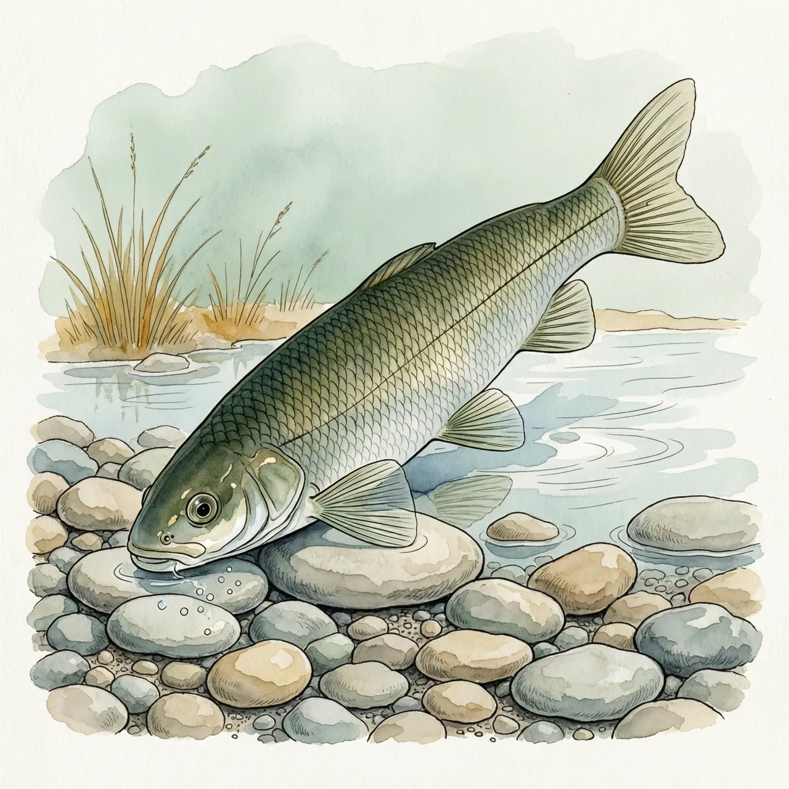
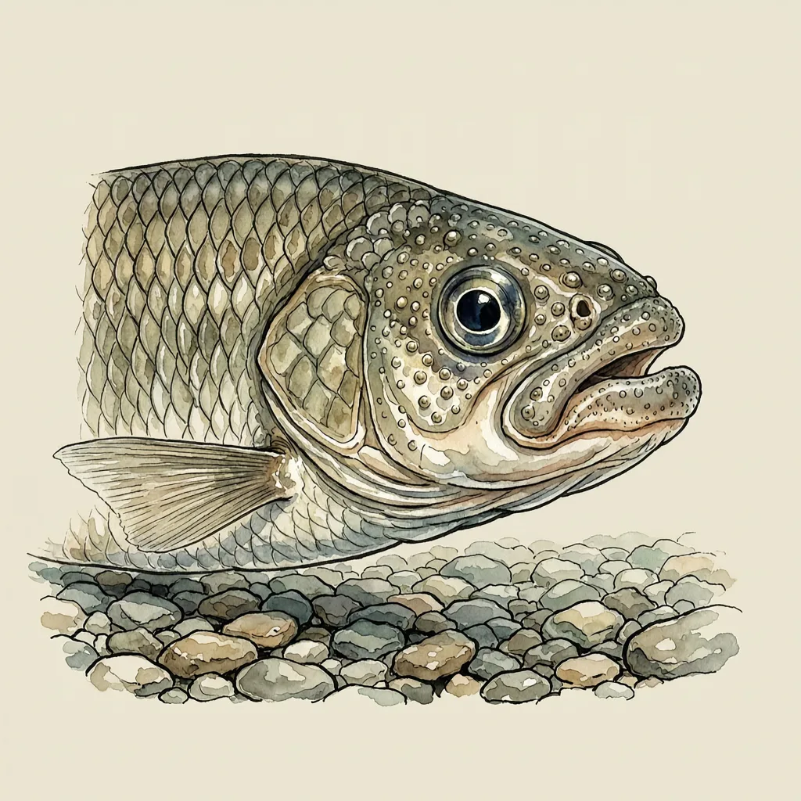

异华鲮是鲤科异华鲮属的淡水小鱼，体长可达10.9公分，在中国分布于珠江水系，模式产地为广西阳朔、修仁；它吻端布满细密的角质结节，口朝下，贴着急流中的砾石刮食石面藻类，被IUCN红色名录列为易危。
水浅、石多、流急，一条十公分上下的小鱼贴着水底过日子。异华鲮在中国分布于珠江水系，模式产地是广西阳朔与修仁，它依赖的是砾石铺底、常年流动的溪水。生物地理区划上这一带归入古北界，南方山溪里的小鱼能被划进古北界，本身就不多见。
异华鲮的口长在头腹面，吻端与下唇排布着细密的角质结节。急流里站得住，靠的不是游得快，而是这张朝下的嘴：压低身体、吻抵石面，把自己固定在砾石上，再刮食石头表面那一层附着藻类。这套结构把它留在了水流最急、多数鱼停不住的浅滩上，那里竞争者少，石面的藻也一直长着。
它的学名等于一次坦白：种加词 assimilis 意为「相近的」，也就是发表时就承认它和另一种鱼相像。1977年它被记在 Pararectoris 属下，后来归进异华鲮属，旧组合只剩下异名的身份；本地人管它叫油鱼。IUCN 把异华鲮列为易危，山溪里的砾石滩恰恰最容易被采砂和筑坝改变。阳朔、修仁作为模式产地被写进文献，是1977年留下的记录。
